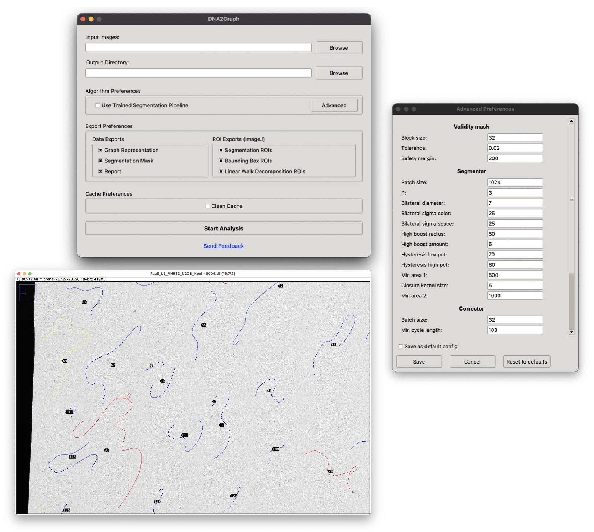
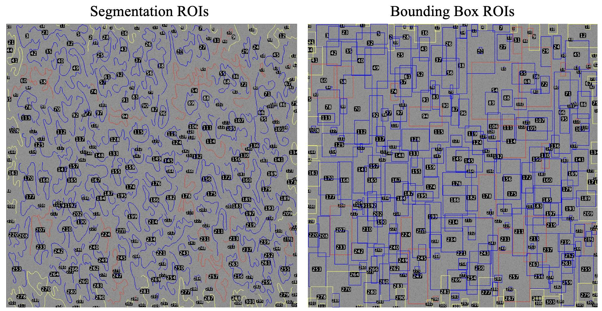

Contents
What is DNA2Graph?
DNA2Graph is an open-source image analysis software for automated segmentation and classification of DNA molecules in electron microscopy images obtained by rotary shadowing.
What can you do with DNA2Graph?
DNA2Graph generates outputs that facilitate both human inspection and automated downstream analysis:- Binary segmentation mask: Rather than treating DNA segmentation as a purely pixel-level task, DNA2Graph incorporates dedicated algorithms to enforce biologically meaningful topology.
- Fiji ImageJ ROIs: DNA2Graph exports segmented molecules and their corresponding bounding boxes as ROI files compatible with the Fiji ImageJ ROI Manager. These ROIs can be overlaid on the original image for visualization and optional manual refinement. Within this output, DNA2Graph automatically assigns each ROI to one of three categories:
- Non-linear: Molecules that exhibit branched or cyclic structures, such as replication forks, Holliday junctions, bubbles, or t-loops.
- Linear: Simple, non-branching DNA filaments.
- Boundary: Molecules located near image borders that are likely incomplete and should be excluded from downstream analysis.
- Length measurements: DNA2Graph measures the total length of each DNA molecule and exports the results to a CSV file, along with measurements of linear subregions within each molecule. This enables downstream computational analyses, such as DNA quantification.
- Spatial graph representation: This representation of the DNA molecules explicitly encodes both molecular topology and spatial organization for downstream analysis.

How does DNA2Graph work?
DNA2Graph offers two alternative approaches for segmentation: a custom, non-learning-based pipeline based on traditional image processing techniques, and a deep learning model trained specifically for this task. In addition, it incorporates novel post-processing algorithms to ensure structural continuity and biological plausibility.
How fast is DNA2Graph?
DNA2Graph processes large, stiched electron microscopy images on a personal computer without requiring a GPU. A 20,000 × 20,000 grayscale image can be processed in 1–8 minutes on an Apple M1 machine with 8 GB of RAM. For a fixed image size, processing time scales with the number of molecules present in the image.Where can I get help with DNA2Graph?
Free technical support for DNA2Graph is available by contacting the project maintainer at federico.chinello@studbocconi.it or by opening an issue on GitHub.
How to cite DNA2Graph?
F. Chinello, E. Zanella, M. Giannattasio, F. M. Buffa, and Y. Doksani.
DNA2Graph [Computer software]. Zenodo, 2026.
https://doi.org/10.5281/zenodo.20413553